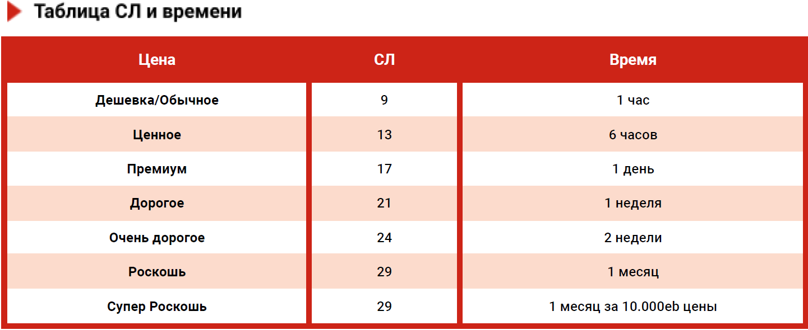
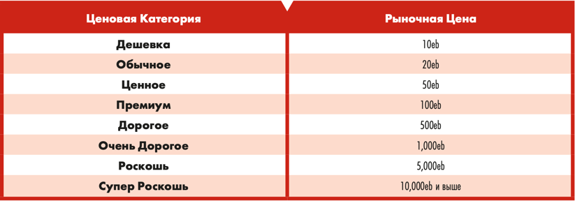

"То, что мир окунули в дерьмо и высушили, не означает, что все сильно
изменилось. Жизнь в городе по-прежнему зависит от технологий, чтобы не
опуститься до полного постапокалипсиса. А это значит, что все зависят от
меня. Если твой блендер сломается, скорее всего, ты не увидишь новый на
местном ночном рынке в течение нескольких недель. А может быть, месяцев.
И это при условии, что ты в хороших отношениях с местным фиксером, и он
старается помочь. А пока я здесь, я готов починить ваш блендер. И ваш агент. И
все, что у вас есть. Технологии — источник жизненной силы этого города. Я
бьющееся сердце, поддерживающее жизнь. По крайней мере, в этом районе."
— Джоã "Торч" Барбаросса Алвес, основатель "Полная Починка Торча"
Техник может чинить, улучшать, модифицировать, изготовлять и изобретать новые предметы,
используя свою Ролевую Способность "Мастер".
Каждый раз, когда Техник повышает свой ранг “Создатель”,
он получает 1 ранг в двух разных Специализациях (Полевая экспертиза, Мастер модернизации, Мастер изготовления или Мастер изобретатель) на свой выбор.
Ваши знания работы техники в полевых условиях делают вас незаменимым специалистом в любых условиях,
особенно если что-то сломалось.
Каждый уровень этой специализации дает +1 к навыкам:
Техника
Кибертехника
Системы Безопасности
Оружейник
Наземная/Морская или Авиатехника
при любой проверке, не связанной со специализацией "Создатель".
Каждый уровень навыка позволяет вместо полноценного ремонта просто “подлатать”
предмет на 10 минут (2 уровень на 20 м, 3 - 30 м и т.д.) до идеального состояния.
Сложность определяется так же, как и полноценный ремонт, но позволяет сделать это быстро.
К этой проверке ты добавляешь ранг “Полевая экспертиза”.
После того, как время пройдет - предмет вернется в исходное состояние.
Подлатать его больше нельзя, пока не произойдет полноценный ремонт.
Техник может улучшить снаряжение 1 из следующих способов. Предмет может
получить только одно улучшение, даваемое этой специальностью.
🔴 Уменьшить потерю человечности киберимпланта (кроме Борг-Оснащений) на 1d6 если его потеря человечности 2d6 или больше.
🔴 Добавить в предмет один слот того же типа (для Опций, Модификаций,
Программ/Оборудования и т.д.).
🔴 Упростить конструкцию предмета, что позволит в будущем сократить время
необходимое для полного ремонта в два раза.
🔴 Сделать скрываемым не скрываемое одноручное оружие.
🔴 Повысить качество оружия со Стандартного до Отличного.
🔴 Добавить Экзотическому Оружию слот для Модификаций.
🔴 Дать возможность Экзотическому Оружию стрелять одним из не основных
типов боеприпасов.
🔴 Добавить 1 ОС, предмету у которого изначально есть ОС.
🔴 Модернизировать транспорт Улучшением, которое требует Ролевую
Способность Кочевника первого Ранга.
🔴 Установить модернизацию, придуманную Техником при помощи “Мастер Изобретатель”.
Необходимы дополнительные материалы, той же ценовой категории, какую ГМ присвоил предмету при его изобретении.
Модернизация делается СТАТ ТЕХ + ТЕХ Навык, которым ремонтируется предмет + Ранг мастера модернизации + 1d10.
СЛ, на которое вы делаете бросок, и время, необходимое для установки апгрейда, зависят от ценовой категории модернизируемого предмета.
Исключением является ТС которые рассматриваются как 1,000eb (Очень дорогие).
При провале проверки, вы тратите половину времени и понимаете, что облажались и придется начинать все с нуля.
Материалы, купленные для модернизации, и предмет, который нужно модернизировать, не пострадали.
Изготовить из материалов существующий предмет или предмет, изобретенный техником с помощью навыка Мастер изобретатель.
Чтобы изготовить предмет, вы делаете бросок СТАТ ТЕХ + навык ТЕХ, которым ремонтируется предмет + ранг Мастера изготовления + 1d10.
Техник должен приобрести материалы на одну ценовую категорию ниже, чем ценовая категория изготавливаемого предмета.
(За исключением предметов супер-роскоши, для изготовления которых требуются материалы, равные половине их цены).
СЛ, против которой вы делаете бросок, и время для изготовления предмета, зависят от ценовой категории предмета, который вы изготавливаете.
При неудаче, вы тратите половину времени и понимаете, что вам придется начинать все с нуля.
Материалы, приобретенные для изготовления предмета, не пострадали.
Придумайте модернизацию для существующего предмета или изобретите совершенно новый предмет.
Чтобы изобрести предмет/модернизацию, вам нужно описать ГМ желаемый функционал своего предмета/модернизации,
как можно точнее, используя формулировки уже существующих в сеттинге технологий,
обязательно укажите способ, с помощью которого ваше изобретение будет выполнять свою функцию.
Для наглядности рекомендуется нарисовать простую схему. ГМ и другие игроки обязательно оценят это.
Если ГМ удовлетворен вашим предложением и не против использования его в своей игре, он опишет,
как именно предложенное изобретение будет функционировать с точки зрения правил,
стараясь не создать несбалансированный предмет.
Модернизации, описанные выше в разделе "Мастер Модернизаций",
служат хорошим примером как сбалансировать технические модернизации.
Основываясь на стоимости предмета или модернизации, если бы он продавался на рынке,
ГМ устанавливает ценовую категорию предмета как можно ближе к другим предметам/модернизациям с аналогичным "уровнем силы" (минимум “Дорогое”).
Время, которое потребуется для изобретения предмета/улучшения, и СЛ,
которую ваш персонаж должен преодолеть с помощью своего ТЕХ + навык ТЕХ,
связанный с ремонтом изобретения или предмета, который изобретение должно улучшить + ваш ранг Мастер изобретателя + 1d10.
СЛ, на которую вы делаете бросок, и время, необходимое для изготовления, зависят от
ценовой категории, которую вы изготавливаете. Если проверка провалена, то на полпути вы понимаете, что вам нужно вернуться к чертежной доске.
После изобретения вы (или другой техник, которому вы покажете чертежи) можете воплотить изобретенный вами предмет/модернизацию в жизнь,
используя опыт изготовления или модернизации!
Стоит отметить, что никто и не не обратит внимание на ваше изобретение, пока не будет рабочего прототипа.
Конечно, тогда они попытаются украсть его. Не беспокойтесь о судах.
Как никакая другая способность в игре, эта способность может привести к нарушению игрового баланса.
Возможно, вашему ГМ придется несколько раз задним числом менять правила действия вашего изобретения (или даже заменить его другим изобретением этой же категории, над которым вы вместе поработаете),
прежде чем вы найдете версию, которая хорошо работает за вашим столом и не оказывает негативного влияния на игровой баланс.
Установка Техапгрейдов может производиться не только персонажем игрока.
В Найт-Сити полно гаражных гениев и пожирателей микросхем, готовых продать чертежи,
набор для установки или вообще прокачать вещь своими руками.
Разумеется, за деньги. Это Тёмное будущее. «Бесплатно» — здесь ругательство.
Подробнее готовые апгрейды, их установку и цены за работу можно прочитать в Мастерской.
Таблица СЛ и Времени


Примечание:
Начиная с Интерфейса-2 с "Биоэкзотики Биотехники" появились товары и услуги у которых категория "цена" и "доступность" могут не совпадать.